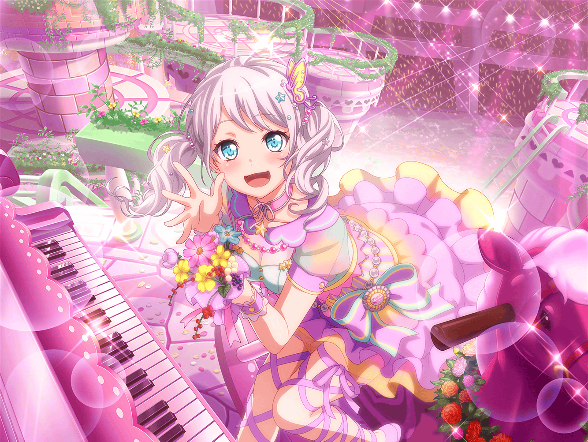

ショッピングモール 本屋
イヴ
あ、マリナさん！
{{userName}}さん！
こんにちは！
まりな
こんにちは！
イヴちゃんも、お買いもの？
イヴ
はい！
今日はブシドーについての本を買いにきました！
見てください、このノート！
まりな
どれどれ……
『武士の朝食～江戸編～』『道を極めしもののふ』……
本のタイトルがいっぱい並んでるけど……
まりな
……って、もしかしてこれ全部買うの！？
イヴ
いえ！
今日はこの中から１冊だけ買おうと思ってます！
まりな
そうなんだ、ビックリした……
それにしても、すごいノートね。
武士道に関する本の名前がこんなに……
まりな
これって全部イヴちゃんが調べたの？
イヴ
ふふふ、実はですね、
これは先日のお渡し会でファンの方が
教えてくださったんです！
イヴ
{{userName}}さん、この中で
知っている本はありますか？
まりな
あはは。私も同じく、
一冊も知ってる本がなかったよ……
まりな
ところで、お渡し会はどうだった？
楽しかった？
イヴ
はい！ たくさんの方が来てくれて、
うれしい言葉をたくさんかけてもらえて……
最高の一日でしたっ！
イヴ
ファンのみなさんは、ブシドーの話に詳しくって、
色んな事を教えてくれたんですよ！
まりな
そうなんだ！ よかったね、イヴちゃん！
イヴ
はい！
本当はもっとお話を聞きたいくらいでした！
イヴ
でも、一人ひとりとお話できる時間は
限られているんです。
思ったよりもあっという間でした
イヴ
なので、次のお渡し会があったら、
またみなさんに来ていただいて、
もっと詳しい話が聞きたいです！
まりな
ふふっ、来てくれるといいね！
イヴ
もちろんです！
来てもらえるように、頑張りますから！
イヴ
……それにしても、みなさんが
あんなにブシドーに詳しいなんて、
思ってもいませんでした
イヴ
やはりブシドーの精神は、日本人の心に
深く刻み込まれているものなのですね……
まりな
もしかしたら、イヴちゃんのために
みんなが勉強してきてくれたのかもしれないよ？
イヴ
そ、そうだったんでしょうか！
そうだったら、とっても嬉しいことですね！
イヴ
私をきっかけに、ブシドーがファンの方々の間に
広がっていく……素晴らしいことです！
イヴ
あ、でもみなさんが私のために自分の時間を、
ブシドーの勉強に使ってくれたってことは……
イヴ
人のために何かをしてあげられる……
もうみなさん、すでにブシドー精神の
持ち主なのかもしれません！
まりな
確かに！
ステキなファンがたくさんいてよかったね！
イヴ
はい！
私、とっても幸せ者です！
イヴ
でもファンの方に負けてはいられません！
私も、もっとブシドーのことを学んで、
立派なサムライになれるよう、頑張ります！
まりな
頑張ってね、イヴちゃん！
イヴ
はい！
ありがとうございます！
マリナさん、{{userName}}さん！